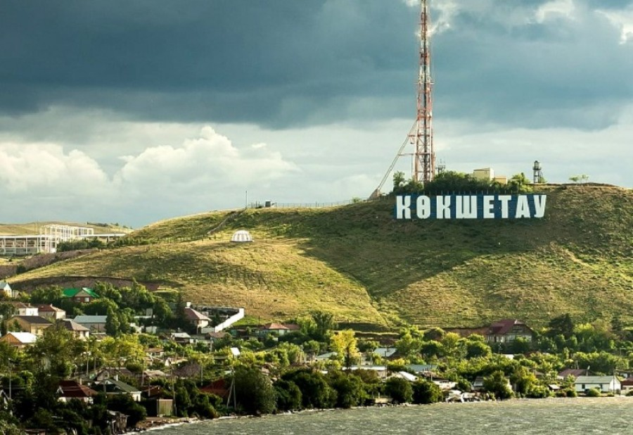

Kokshetau is located in the north of the Kazakhstan. Since 1999, the city is the regional center of Akmola region.

Kokshetau was founded in 1824 as a military fortification (outpost), which housed the order (administration) of the
Kokchetav outer district and a detachment of Siberian Cossacks. It has had the status of a city since 1895.
In the early 1990s, when choosing the new capital of Kazakhstan, Kokshetau was considered as a possible candidate.
Kokshetau is located in the forest-steppe zone on the border of the southwestern part of the West Siberian Plain, on the southeastern shore of Lake Kopa, at an altitude of 234 meters above sea level, within the northern slopes of the Kokshetau upland of the vast Ishim-Irtysh watershed, the foothills of which surround the city from the south and west. There are many lakes and dense pine forests around the city.
After the collapse of the USSR in 1991 and in the process of reforming the country's economy, Kokchetav, like many other cities, had to endure some losses. One of the flagships of the industry, the Kokchetav Instrument Making Plant, has ceased to exist. Now there are more than 2 thousand different enterprises of different forms of ownership operating in the city. The successful work of some of them has created a solid reputation for them both in cities and outside Kazakhstan. The city has a network of private cafes, shops, hairdressers, offices. Branches of the largest Kazakhstani banks are operating.